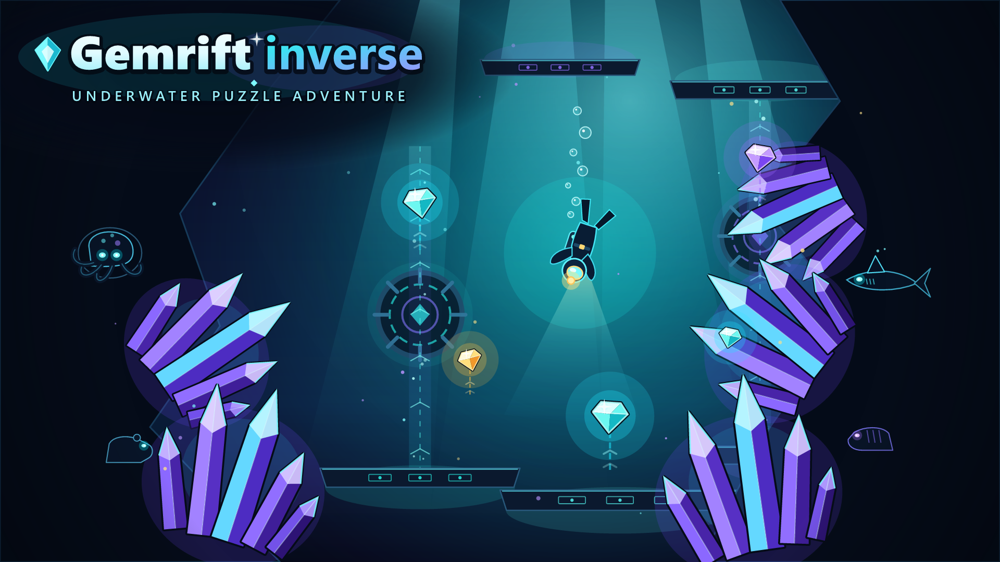
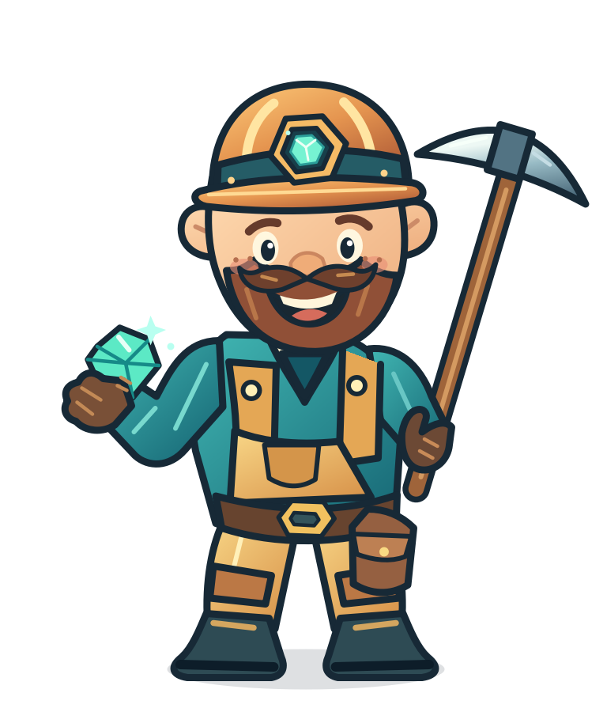

01 / THE CURRENT
Every breath
counts.
Swim through flooded passages, find air pockets, and plan your route before the water takes its toll.
SWIM
✦ An underwater puzzle adventure
Swim into a world where rocks rise, air is precious, and the way forward is never quite where you expect.

Meet the curious new side of Gemrift. Milo dives into a chain of title-inspired underwater caves, where the terrain is a puzzle and gravity has its own ideas.
Read the room. Watch the water. Give a rock a nudge in the right direction—and see what rises.
See what waits belowSwim through flooded passages, find air pockets, and plan your route before the water takes its toll.
Upward-moving rocks turn familiar cave logic on its head. Make the strange new physics work for you.
Set clever chain reactions in motion, gather enough gems, and find your way to the exit.
215 doors into the deep
Each cave starts with its own name. That name shapes the rooms, the rockwork, the water, and the puzzle waiting inside.
From twisting mazes to flooded chambers, every title points to a new shape—and a new way to think your way through.

MILO COPPERCAP ✦A familiar face. A very different world.
Curious, quick on his feet, and never one to pass up a sparkle—Milo is back for an adventure that will test his instincts in an entirely new element.
This time, there are no dry shortcuts. Just good timing, a pocket full of courage, and a cave full of surprises.
Visit the original GemriftKeep an eye on the locals. Some patrol the walls, some keep to their lanes—and every encounter can change the cave.
Follows the cave walls
Patrols the cave walls
Patrols a horizontal lane
Patrols a vertical lane
Swim, dig, and collect the gem quota to open the exit. Unlimited retries mean there is always room for another bright idea.
These are the current default bindings; you can remap them in Settings. Junior is the default difficulty. The relaxed clock lets play continue at zero; Strict clock is optional. Details may change before release. More questions? Start here
THE RIFT IS TAKING SHAPE
Gemrift inverse is in development. The caves are being explored, the details are still evolving, and there is more to come.
Explore the original Gemrift Questions about Gemrift inverse? NO RELEASE DATE ANNOUNCED